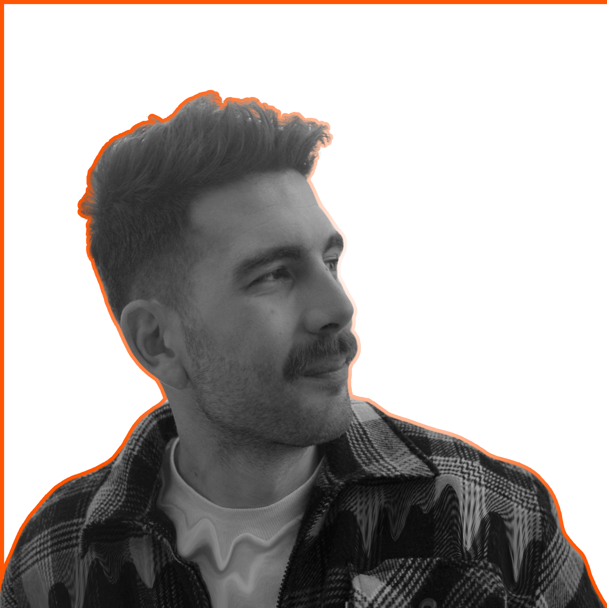

Passionnsé par le graphisme et l'art, je me suis créé un univers à travers une panoplie de savoirs artistiques que j'ai acquis durant mes années d'études, mais aussi au fil de mes rencontres. Mon parcours m'a permis de développer ma sensibilité artistique, de la mode à la photo en passant par le dessin et le graphisme digital, jusqu'à la musique. J'ai su m'adapter de manière autodidacte, au changement de la conception digitale et aussi à la progression des réseaux sociaux dans le monde. Dans une veille technologique constante, je reste informé de ce qui se fait de plus sophistiqué pour un gain de temps ou un nouvel aspect graphique. Visionnaire quant à l'évolution de la mode, je m'efforce de suivre les tendances tout en restant fidèle à mon propre univers. je vous laisse découvrir mon monde à travers mon portfolio, Bienvenue.
“Les détails font la perfection, et la perfection n'est pas un détail.”
Léonard de Vinci
On me surnomme MAXIMUS. La musique rythme mes journées, et je suis ouvert à toute nouvelle découverte musicale. Passionné de rugby (en convalescence de la coupe du monde 2023). Toujours en forme et dynamique, je serais mettre des paillettes dans votre vie
HTML CSS Illustrator Photoshop Autodesk Maya TvPaintAnimation Kanban Adobe XD
Communication Travail d'équipe Discipline Résilence Rigueur Gestion d'équipe
BACHELOR INFOGRAPHIE 3D Studio M, Toulouse 2015-2017 BAC PROFESSIONNEL MODE Lycée Saint-Vincent-de-Paul
Français Anglais B2-C1
Connaissance du SMO (Social Media Optimisation) Veille concurrentielle Production de contenu Web (Photo et Video) Curiosité et culture web Communication Anticipation
Créatif Dynamique Stratégie de communication Gestion budgétaire Sens du relationnel Création graphique digitale (flyers et bannières)
Formation Militaire Initial Réserviste Base Militaire Caritat, Orange
N'hesitez pas à prendre contact avec moi si la découverte de mon univers vous a fait voyager MAIL : maxime.lenzini@outlook.com N° : 06 02 47 63 42
{kind=link}
{kind=link}
{kind=link}
{kind=link}
{kind=link}
{kind=link}
{kind=link}
{kind=link}
{kind=link}
{kind=link}